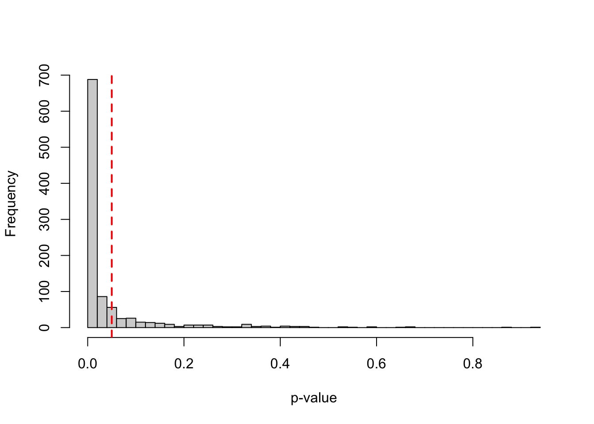
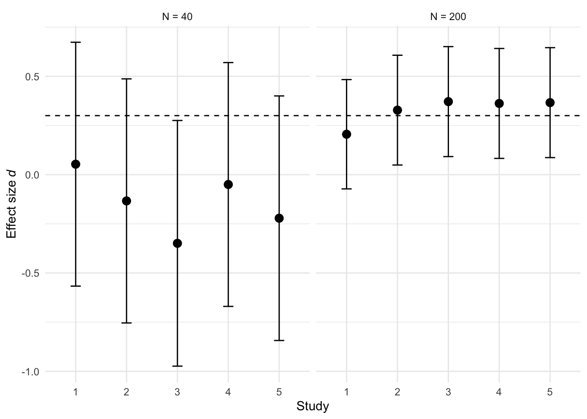
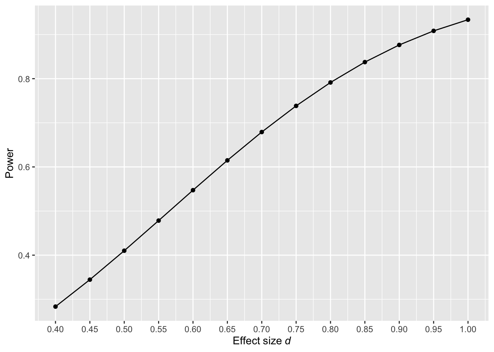
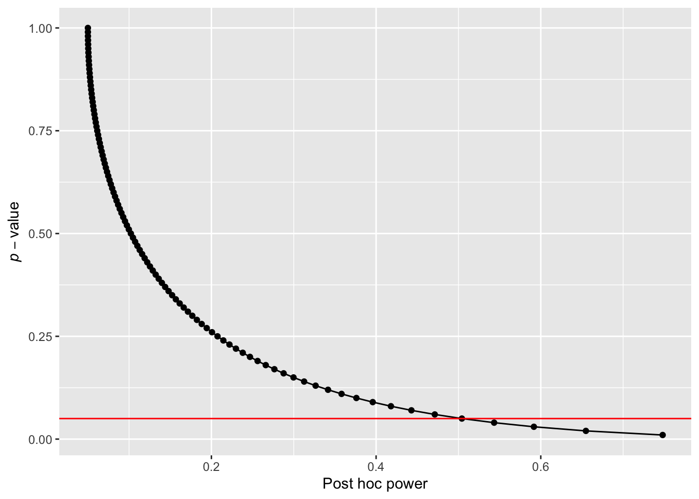

1 First things first
1.1 Null Hypothesis Significance Testing as inferential framework
Researchers are often interested in making dichotomous claims (e.g., “the intervention is superior to control”; “the intervention is not superior to the control”) while controlling the probability that such claims are wrong. One common tool for making such claims is the Null Hypothesis Significance Testing (NHST) framework, which relies on p-values to guide decision-making. When conducting a hypothesis test there are 4 potential outcomes:
True positive: the statistical test yields a significant p-value when there is a true effect or difference between the groups/conditions being compared. In this case the test correctly rejects the null hypothesis of no difference.
True negative: the statistical test yields a non-significant p-value when there is no true effect or difference between the groups being compared. In this case the test correctly fails to reject the null hypothesis of no difference.
False positive or type I error (usually set to alpha (\(\alpha\)) = 0.05): A type I error occurs when a statistical test yields a significant p-value (p < \(\alpha\)) even though there is no true effect or difference between the groups being compared. In this case the test wrongly rejects the null hypothesis of no difference committing a type I error. Researchers can control the probability of making a type I error by setting a threshold, commonly setting \(\alpha\) to 0.05 (5%) before conducting a hypothesis test. That means that in the long run, no more than 5% of tests will yield false positives.
False negative or type II error (denoted by \(\beta\)): A type II error occurs when a statistical test fails to detect a true effect—that is, it yields a non-significant p-value when there is a true effect or difference between the groups being compared. In this case the test fails to reject the hypothesis of no difference committing a type II error. Researchers can reduce the risk of type II error by designing studies with high statistical power (hereafter referred to as power). Power is defined as 1-\(\beta\), where \(\beta\) is usually set to 0.2 (20%) and ensures that in the long run, no more than 20% of tests will yield a false negative.
In NHST, the goal of a test is to evaluate whether the data provide sufficient evidence to reject the null hypothesis (H0). Typically, H0 specifies that there is no effect or difference (i.e., H0 = 0). However, H0 can also be set to a non-zero value or even defined as a range of non-zero values, depending on the research question (see Lakens (2019) for a detailed explanation on different types of H0 and Lakens (2017) for equivalence tests). When the test leads to the rejection of H0, researchers conclude that the alternative hypothesis (H1) is supported by data, which includes all values not covered by H0.
In essence, if researchers aim to make claims while controlling how often they will be wrong in the long run, they should use NHST to test hypotheses and ensure that both type I and type II errors are appropriately controlled.
1.2 What is statistical power?
Power is defined as the probability that a statistical test will yield a significant p-value given that a true effect exists (i.e., the null hypothesis is false). It depends on several factors: the effect size, the total sample size (N), the statistical test and α. For a given α, the power of a test will increase as the effect size and/or the sample size increases. In the frequentist framework, power is interpreted as a long-term probability. That is, if you were going to repeat the same experiment many times under identical conditions where the effect size is fixed, power represents the proportion of studies that would yield a significant p-value. For example, a test with 80% power is expected to detect the effect 80 out of 100 times on average. If you want to plan a study with 80% power, a power analysis will answer the following question:
“If I repeated my experiment 1000 times, what sample size would allow me to reject the null hypothesis 80% of the time?”
Let’s illustrate the concept of power using an unpaired t-test with an effect size d = 0.4. Unless otherwise specified, we assume \(\alpha\) = 0.05 throughout the book.
# Ensure reproducibility
set.seed(050990)
# Set parameters
nsims <- 1000 # number of simulations
N <- 200 # total sample size
smd <- 0.4 # standardized mean difference
sd <- 1 # standard deviation (SD)
alpha_level <- 0.05
# Run simulation
p_values <- replicate(nsims, {
intervention <- rnorm(
n = N/2,
mean = smd,
sd = 1
)
control <- rnorm(
n = N/2,
mean = 0,
sd = 1
)
test_result <- t.test(
intervention,
control,
alternative = "two.sided"
)
p_values <- test_result$p.value
}
)
# Return proportion of significant p-values
power <- mean(p_values < alpha_level)*100Assuming a true effect size of d = 0.4, a standard deviation (SD) of 1, and an N of 200 (100 per group), such study design would achieve a power of 80.4%. In other words, repeating the same experiment many times under the same conditions, approximately 80.4% of the resulting p-values would fall below 0.05. This is illustrated in the histogram shown in Figure 1.1, where roughly 80% of the p-values are smaller than 0.05, reflecting the power of the test. Under the alternative hypothesis, the greater the power of a test, the larger the proportion of p-values that fall below 0.05, resulting in a more right-skewed distribution of p-values.

When there is no true effect, the power of a test is equivalent to \(\alpha\) or the Type I error rate. In other words, if a researcher conducts a study under the null hypothesis (i.e., assuming no difference between two groups), the probability of obtaining a significant p-value is 5% (\(\alpha\) is set to 0.05). This is because, by definition, 5% of p-values will fall below 0.05 just by chance alone, even when there is no true effect. Under the null hypothesis, p-values follow a uniform distribution over the range 0 to 1, meaning all values are equally likely in the long run. To illustrate this, let’s run a simulation and observe how often type I errors occur under the null hypothesis.
# Ensure reproducibility
set.seed(050990)
# Set parameters
nsims <- 1000 # number of simulations
smd <- 0 # standardized effect size of 0
N <- 200 # total sample size
# Run simulation
p_values <- replicate(nsims, {
intervention <- rnorm(
n = N/2,
mean = smd,
sd = 1
)
control <- rnorm(
n = N/2,
mean = 0,
sd = 1
)
test_result <- t.test(intervention,
control,
alternative = "two.sided"
)
p_values <- test_result$p.value
}
)
# Return proportion of significant p-values
power <- mean(p_values < 0.05)*100 Assuming a true effect size of 0 and an N of 200 (100 per group), such study design would achieve a power of 4.5%, which is approximately equal to \(\alpha\), the type I error rate. This is illustrated in the histogram shown in Figure 1.2, where roughly 5% of the p-values are smaller than 0.05, reflecting the type I error rate of the test.
1.3 Why is high power a desired property of your study design?
Designing studies with high power to detect the effect size of interest increases the informational value of studies for three main reasons:
- When a study design is under-powered to detect the effect size of interest, a non-significant p-value provides little information since it may simply reflect insufficient sensitivity (i.e., power) rather than the absence of an effect. For example, suppose two researchers compare the difference between the same two interventions with an unpaired t-test, where the true effect size is ds = 0.2. Researcher A recruits N = 40 (20 per group), while researcher B recruits N = 800 (400 per group).
pwr <- pwr.t.test(
n = c(20, 400),
d = 0.2,
sig.level = 0.05,
alternative = "two.sided"
)Researcher A’s study design would achieve approximately 9% power, meaning that only 1 out of 10 replications is expected to yield a significant result even though a real difference between two interventions exists. In contrast, researcher B’s study design achieves 81% power. Thus if researcher B’s test yields a non-significant p-value, she can be more confident that the effect is likely absent or smaller than the expected effect size.
Although non-significant p-values from highly-powered study designs are more informative, non-significant p-values should never be interpreted as evidence of absence. To make such a claim, researchers must use equivalence tests, which are specifically designed to test for the absence of an effect within a defined range.
- Studies designed with high statistical power yield narrower 95% confidence intervals (CI). This improves precision and reduces the uncertainty around effect sizes estimates. Figure 1.3 depicts the confidence intervals from five replicated studies conducted with two different sample sizes (N of 40 and N of 200), to detect a true effect size of 0.3.

Although we simulated the data with a true (population) effect size of d = 0.3, the wide confidence intervals indicate that observed effect sizes have considerable uncertainty, particularly for smaller sample sizes. All values within a confidence interval are plausible values of the true (population) effect size. For instance, a study that yields a 95% CI ranging from -0.75 to 0.5 (i.e., study 2 in N = 40) is largely uninformative because the interval includes both positive and negative effects, as well as the possibility of no effect at all.
To sum up, designing studies with adequate power to detect the effect size of interest increases the informational value of studies in three ways: a) studies have a higher probability of detecting a true effect or difference when it exists, b) non-significant results become informative and c) confidence intervals tend to be narrower, providing more precise effect size estimates.
1.4 Types of power analyses
We briefly discuss three types of power analyses below, but readers are referred to Lakens (2022) for a comprehensive overview of the topic.
A priori power analysis: it is performed before data collection to estimate the required sample size to achieve a desired level of power given the expected effect size, the planned test and the chosen alpha level. The goal of an a priori power analysis is to control type II error rates, or in other words, to limit the probability of observing a non-significant effect, assuming there is an effect of a specific size.
Sensitivity power analysis: it is used to assess which effect sizes could be reliably detected given a sample size, the statistical test and α. This type of power analysis is particularly useful when researchers are uncertain about the expected effect size, are working with pre-existing data, are constrained by a limited number of participants or are doing exploratory research. Sensitivity analyses are often presented as power curves, which illustrates the relationship between effect sizes and the achieved power of the test for a given sample size and \(\beta\) (Figure 1.4). For example, suppose resource constraints only allow us to recruit an N of 50 participants in a study comparing two independent groups. Figure 1.4 reveals that with this sample size, only effect sizes larger than d = 0.8 can be reliably detected with adequate power (i.e., \(\geq\) 80%).

- Post hoc power analysis: it is performed after data collection to estimate the power of the study as a means to justify a non-significant effect, typically using the observed effect size, sample size and alpha level from the study. However, this type of power analysis is considered bad practice and researchers should not report such analysis. This is because the information provided by the post hoc power analysis is redundant. To compute post hoc power, all that is needed is the observed p-value and alpha level. For this reason, calculating post hoc power does not provide new information that is not already provided by the p-value and \(\alpha\) (Lenth 2007; Christogiannis et al. 2022; Yuan and Maxwell 2005). Lenth (2007) provides an R function to compute post hoc power for an unpaired t-test, which is as follows:
If we assume a p-value = 0.07, degrees of freedom = 48 (N = 50; df = 50-2) and \(\alpha\) = 0.05, posthoc_power() returns a post hoc power of:
posthoc_power(
p_value = 0.07,
df = 48,
alpha_level = 0.05)[1] 0.4428971Studies that yield non-significant p-values typically have less than 50% power, whereas a study that yields a p-value of 0.05 will have approximately 50% power. This relationship can be visualized by plotting post hoc power as a function of p-values ranging from 0 to 1.
p_value <- seq(0.01, 1, by = 0.01)
df <- 48
alpha_level <- 0.05
df_power <- data.frame(
p_value = p_value,
power = map_dbl(p_value, ~ posthoc_power(.x, df, alpha_level))
)
ggplot(df_power,
aes(y = p_value, x = power)) +
geom_point() +
geom_line() +
geom_hline(yintercept = 0.05, colour = "red") +
ylab(expression(italic(p)-value)) +
xlab("Post hoc power") 
As illustrated in Figure 1.5, whenever a p-value is non-significant (greater than the conventional alpha level, indicated by the red line), the corresponding post hoc power is typically less than 50%. Therefore, conducting a post hoc power analysis to justify a non-significant result is uninformative since tests that yield a non-significant p-value will typically be under-powered when evaluated post hoc.
1.5 What is your effect size of interest?
When researchers conduct an a priori power analysis the aim is to design a study that has adequate power to detect the effect size of interest. But what do we really mean by effect size of interest? The effect size of interest corresponds to the difference between treatments, interventions or conditions that researchers consider practically, theoretically, or clinically relevant and, hence, of interest. As Senn (2021) argued, “the difference one would not like to miss”. The most challenging aspect of an a priori power analysis is the selection of the effect size, which is inherently subjective and therefore requires explicit justification. The best approach would be to set the smallest effect size of interest (SESOI) (Lakens 2022). In practice, however, it is often based on an expected effect size. To do so, researchers may use an effect size reported in a previous study or meta-analysis to inform their decision on what effect size to expect.
Depending on the study goal or hypothesis, the intervention effect might correspond to a mean difference between two groups or conditions at a specific time point, or an interaction effect where the effect of a factor is moderated by the effect of a second factor. This difference can be expressed in absolute (e.g., mean difference) or relative terms (e.g., hazard ratio, risk ratio). Absolute ES can be presented in unstandardised (raw units) or standardised form (e.g., Cohen’s d ). Among standardized effect sizes, one of the most commonly used in psychology and social sciences is Cohen’s d, which refers to a family of related effect size measures, differentiated by subscripts such as ds or drm depending on the study design (between- or within-subject design, split-plot design) and type of standardizer used. Readers are referred to Jané et al. (2023) for a gentle introduction to how to calculate different types of effect sizes.
In a between-subject design with two independent groups, the standardized effect size is usually calculated as a Cohen’s ds:
\[ d_s = \frac{M_A - M_B}{SD_p} \]
where \(M_A\) and \(M_B\) are the means corresponding to group A and B and \(SD_P\) is the pooled standard deviation which can be calculated as:
\[ SD_P = \sqrt{\frac{(n_A - 1)SD^2_A + (n_B - 1)SD^2_B}{n_A + n_B - 2}} \]
where \(SD_A\) and \(SD_B\) are the standard deviations of each group and \(n_A\) and \(n_B\) are their corresponding sample sizes.
In a repeated-measures design, the same participants are measured under two different conditions. The standardized effect size is usually calculated as a Cohen’s dz:
\[ d_{z} = \frac{M_1 - M_2}{SD_{diff}} \]
where \(M_1\) and \(M_2\) correspond to the observed scores in each condition and \(SD_{diff}\) is the standard deviation of the difference which is calculated as follows:
\[ SD_{diff} = \sqrt{SD^2_1 + SD^2_2 - 2rSD_1SD_2} \]
where \(r\) is the correlation between scores and \(SD_1\) and \(SD_2\) correspond to their standard deviations. Cohen’s dz is the effect size required by paired-samples power analyses such as pwr.t.test(type = "paired"). A related measure, drm, adjusts dz for the correlation between measurements, drm = dz × \(\sqrt{2(1 - r)}\), which makes it comparable to ds (Lakens 2013).
Unless otherwise specified, throughout this book and in the accompanying code snippets, we use smd as an equivalent of a Cohen’s d and represents the standardized mean difference between two interventions or conditions divided by an assumed SD. For example, if smd = 0.4 and sd = 1, this corresponds to a Cohen’s d of 0.4 (0.4/1). As we will see in Chapter 5, depending on the software or tool used to conduct the a priori power analyses, the effect size may be specified either as a standardized effect size (e.g., Cohen’s d, smd) or as a raw effect size (i.e., mean difference).